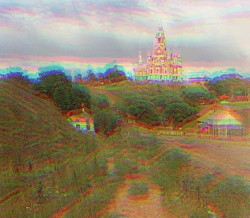
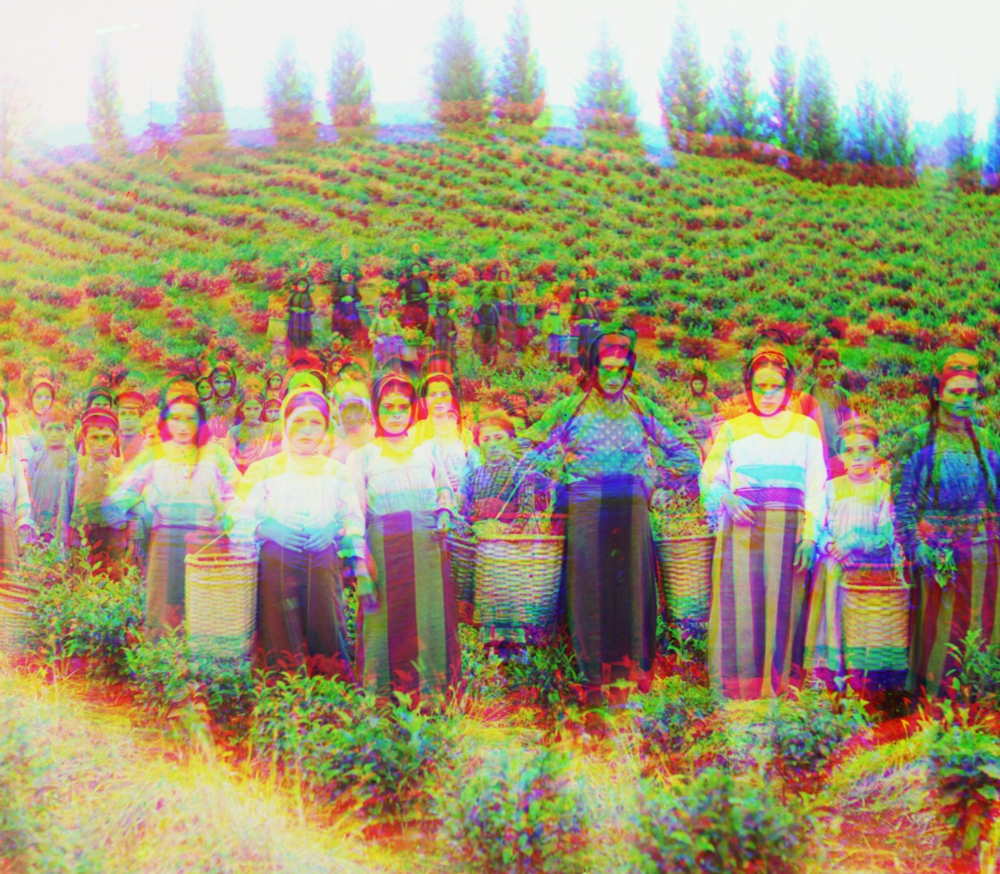
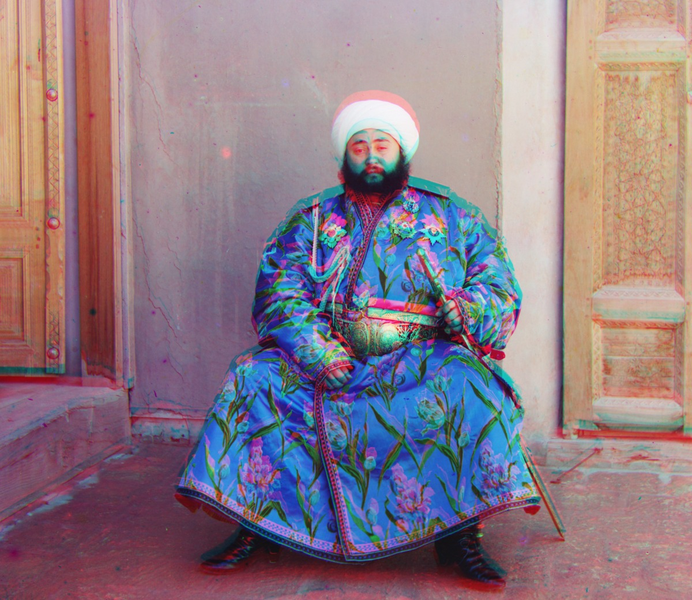

Cathedral
G (+2, +5) R (+3, +12)
CS 180 · Project 1 · Fall 2026
Aligning red, green, and blue exposures to produce color images.
14 provided images / 3 additional images / normalized cross-correlation
01 / Overview
Prokudin-Gorskii photographed each scene through blue, green, and red filters. The scans contain three grayscale exposures stacked vertically, with blue at the top, green in the middle, and red at the bottom. The channels do not line up exactly, so simply stacking them as RGB leaves colored outlines.
I divide each scan into three equal-height channels and keep blue fixed. I convert the data to floating point between 0 and 1, dividing 8-bit images by 255 and 16-bit images by 65535. Then I find the horizontal and vertical shifts for green and red and combine the aligned channels in RGB order. The single-scale search compares both channels directly to blue; the pyramid method aligns red through green, as explained below.
I use normalized cross-correlation (NCC) to compare the channels. For each candidate shift, I subtract the mean from each scoring region, divide by its L2 norm, and take their dot product. A larger score means a better match:
NCC(A, B) = Σ[(A − mean(A))(B − mean(B))]
/ [√Σ(A − mean(A))² · √Σ(B − mean(B))²]
Mean subtraction removes an overall brightness offset, and normalization accounts for overall contrast. NCC still compares the spatial pattern of intensities after this normalization. Those patterns can differ between color channels.
The dark and light scan borders are not scene content. I exclude a fixed interior margin when scoring and keep the scoring window inside the valid overlap for every candidate shift. This prevents wrapped pixels from contributing to NCC. The same parameters are used for every image.
02 / Single-scale alignment
For each of the three small JPEGs, I try every integer displacement from −15 to +15 pixels in both directions. The nested loops check 31 × 31 = 961 candidates per channel and keep the shift with the highest NCC. These images are small enough that this exhaustive search is fast.
Below, the cathedral comparison shows the colored outlines before alignment and the result after alignment. The three results that follow use the single-scale search.

G (+2, +5) R (+3, +12)

G (+2, -3) R (+2, +3)

G (+3, +3) R (+3, +6)
All offsets on this page are (x, y) shifts applied to the moving channel to align it to blue. Positive x moves right; positive y moves down. G is green-to-blue and R is red-to-blue.
03 / Multi-scale pyramid alignment
The full-resolution TIFFs are roughly 3,000 × 4,000 pixels per channel, and their shifts can be much larger than 15 pixels. Enlarging the exhaustive search at full resolution would make it expensive to compare every candidate.
For every pyramid result, I align green to blue and red to green. Adding those two displacements gives the final red-to-blue shift: R→B = R→G + G→B. For Emir, this reduced the large colored outlines compared with aligning red directly to blue. I discuss that result below. Both final shifts are applied relative to blue, and the metric is still NCC on raw channel intensities.
I stop downsampling when the largest channel dimension is at most 400 pixels. I use a ±15-pixel search at that coarsest level, a ±2-pixel refinement at every larger level, and a 15% scoring margin on every side. The TIFFs have five levels; the JPEGs are already smaller than 400 pixels, so their pyramid has one level. Pyramid JPEG offsets can differ slightly from single-scale results because red uses green as its reference.
These are the pyramid results for all 14 supplied images, including the three JPEGs. The previews have a fixed 10% crop on each edge to remove most of the scan borders. Click an image to open the full-resolution, uncropped result.



G (+2, +5) R (+3, +12)

G (+2, -3) R (+3, +3)

G (+3, +3) R (+4, +7)

G (+4, +25) R (-4, +58)

G (+24, +49) R (+41, +106)
Aligning red through green reduced the large colored outlines. See the comparison below.
G (+17, +60) R (+14, +125)
I think some people may have moved between exposures, which could explain the remaining colored outlines.
G (+17, +41) R (+22, +89)

G (+7, +40) R (+11, +131)

G (+10, +81) R (+13, +177)

G (+3, +28) R (+7, +69)

G (+29, +79) R (+37, +177)

G (-6, +49) R (-25, +96)

G (+14, +52) R (+11, +111)

G (-7, +15) R (-16, +82)
04 / Additional images
I downloaded three more glass-plate scans from the Library of Congress and processed them at full resolution with the same pyramid method and parameters. The source pages are linked below each result.

G (-9, +12) R (+4, +68)

G (+0, +35) R (-1, +123)
View from the timber mill in the village of Lizhma · Library of Congress ↗

G (+25, +47) R (+30, +108)
05 / Computed offsets
These shifts align green and red to blue and are measured in pixels at the original resolution. Runtime includes reading, splitting, alignment, and stacking, but excludes displaying and saving the images. Times can vary between runs.
| Image | Green → blue | Red → blue | Time (s) |
|---|---|---|---|
| cathedral.jpg | (+2, +5) | (+3, +12) | 0.08 |
| monastery.jpg | (+2, -3) | (+3, +3) | 0.08 |
| tobolsk.jpg | (+3, +3) | (+4, +7) | 0.10 |
| church.tif | (+4, +25) | (-4, +58) | 1.08 |
| emir.tif | (+24, +49) | (+41, +106) | 0.90 |
| harvesters.tif | (+17, +60) | (+14, +125) | 0.84 |
| icon.tif | (+17, +41) | (+22, +89) | 0.89 |
| ilemselga.tif | (+7, +40) | (+11, +131) | 0.86 |
| melons.tif | (+10, +81) | (+13, +177) | 0.82 |
| religous_painting.tif | (+3, +28) | (+7, +69) | 0.78 |
| self_portrait.tif | (+29, +79) | (+37, +177) | 0.87 |
| siren.tif | (-6, +49) | (-25, +96) | 0.89 |
| three_generations.tif | (+14, +52) | (+11, +111) | 0.91 |
| wharf.tif | (-7, +15) | (-16, +82) | 0.89 |
| kama_bridge.tif | (-9, +12) | (+4, +68) | 0.82 |
| lizhma_timber.tif | (+0, +35) | (-1, +123) | 0.79 |
| trestle_bridge.tif | (+25, +47) | (+30, +108) | 0.74 |
06 / Alignment issues
My first result for Emir had large colored outlines around the face, turban, and clothing. The color channels have different brightness values. I think the differences around the robe may have caused NCC to choose a poor red-to-blue match. I tried aligning red to green instead, then added the green-to-blue shift. This reduced the large outlines in the comparison below. My guess is that red and green have more similar intensity patterns here, making them easier to match. I use this same reference order for all pyramid images.

Harvesters still has colored outlines around some people, especially the woman on the left. I think movement between exposures could explain some of these outlines. Checking the global shift and trying a local alignment did not remove the broad blue/yellow outline. If a person moved separately from the background, one shift per channel would not align both. There may also be small alignment errors left over, so I cannot tell from this result how much is due to movement.
Both methods use NCC on raw channel intensities. The full-size results retain the scan borders.